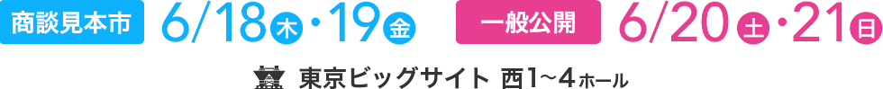

- 2015.6.20一般公開の様子ページがオープンしました。
- 2015.6.18商談見本市の様子ページがオープンしました。
- 2015.6.10ステージショーページを更新しました！
- 2015.5.29キッズパークページオープンしました！
- 2015.5.18来場者登録証ダウンロード・受注キャンペーンについて・出展社のイベントページオープンしました！
- 2015.4.27ステージショーページオープンしました！
- 2015.4.10英語版ページオープン・ホールマップ更新しました
- 2015.3.27東京おもちゃショー2015公式ホームページ、グランドオープンしました！


- 3-2
- （株）エンスカイ
- 男の子/女の子/ゲーム・パズル/雑貨・生活/その他の商品・サービス
- 3-3
- マルカ（株）
- 乳幼児・知育/男の子/女の子/ぬいぐるみ・人形/ゲーム・パズル/ホビー・模型・RC/雑貨・生活/季節もの玩具・雑貨/その他の商品・サービス
- 3-4
- コンビ（株）
- 乳幼児・知育
- 3-5
- （株）アサツー ディ・ケイ
- その他の商品・サービス
- 3-6
- （株）イメージミッション木鏡社
- 乳幼児・知育/男の子/女の子/ゲーム・パズル
- 3-7
- プラントイジャパン（株）
- 乳幼児・知育
- 3-8
- （株）ヤマト
- その他の商品・サービス
- 3-9
- （株）トレーン
- 男の子/季節もの玩具・雑貨
- 3-10
- （株）コルグ
- 乳幼児・知育/その他の商品・サービス
- 3-11
- （株）尾上萬
- 男の子/女の子/ゲーム・パズル/季節もの玩具・雑貨
- K-1
- （公財）日本相撲協会
- その他の商品・サービス
- K-2
- NPO法人 日本ジュニアゴルファー育成協議会
- その他の商品・サービス
- K-3
- ファミリーアップス
- その他の商品・サービス
- K-4
- （株）ソニー・クリエイティブ プロダクツ
- 男の子
- K-5
- （一社）全国木材組合連合会
- 乳幼児・知育
- K-6
- トヨタ自動車（株）
- その他の商品・サービス
- K-7
- （株）チェリオジャパン
- その他の商品・サービス
- K-8
- 小学館 ぷっちぐみ編集部
- 女の子
- K-9
- 松竹（株）
- その他の商品・サービス
- K-10
- （株）エー・ティー・エックス
- その他の商品・サービス
- K-11
- 東京いちばプロジェクト
- その他の商品・サービス
- K-12
- 清水建設（株）
- その他の商品・サービス
- K-13
- （公財）日本宇宙少年団
- その他の商品・サービス
- K-14
- （一社）盲導犬総合支援センター
- その他の商品・サービス
- K-15
- 日産自動車（株）
- その他の商品・サービス
- K-16
- （株）保険見直し本舗
- その他の商品・サービス
- K-17
- （株）キッズステーション
- その他の商品・サービス
- K-18
- おもちゃのまちバンダイミュージアム
- その他の商品・サービス
- K-19
- 台東区 墨田区 江東区
- その他の商品・サービス
- K-20
- 那須ハイランドパーク
- その他の商品・サービス
- K-21
- 仙台大学
- その他の商品・サービス
- K-22
- 「カルピス」
- その他の商品・サービス
- K-23
- （株）サンリオ
- その他の商品・サービス
